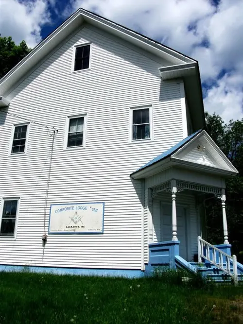

October 20, 2026 Draft
St. Petersburg Lodge No. 139
St. Petersburg, Florida
Visiting as a Brother from Palmetto Lodge No. 19.
Read more →Masonic travels
Visits to Grand Lodges and lodges around the country.
October 20, 2026 Draft
St. Petersburg, Florida
Visiting as a Brother from Palmetto Lodge No. 19.
Read more →August 1, 2026 Draft
McAlester, Oklahoma
Visiting Rainbow’s international headquarters on the way home from Supreme Session in Tucson.
Read more →
June (year to confirm, c. 2011–12) Draft
South Glastonbury, Connecticut
Touring the Grand Lodge of Connecticut, then a Master Mason Degree at Columbia Lodge No. 25.
Read more →
2011 Draft
Maine, including Composite Lodge #158, La Grange
My own photos of lodges on a trip around Maine, including Composite Lodge #158.
Read more →
c. 2011 (to confirm) Draft
Bangor, Maine
A stop at Anah Temple Mystic Shrine in Bangor.
Read more →
September 2010 Draft
Bridgewater & Boston, Massachusetts
Returning a 1945 Masonic book, and a 275th commemorative coin from South Carolina.
Read more →2009 Draft
Boston, Massachusetts
My 2009 visit to the Grand Lodge of Massachusetts in Boston.
Read more →